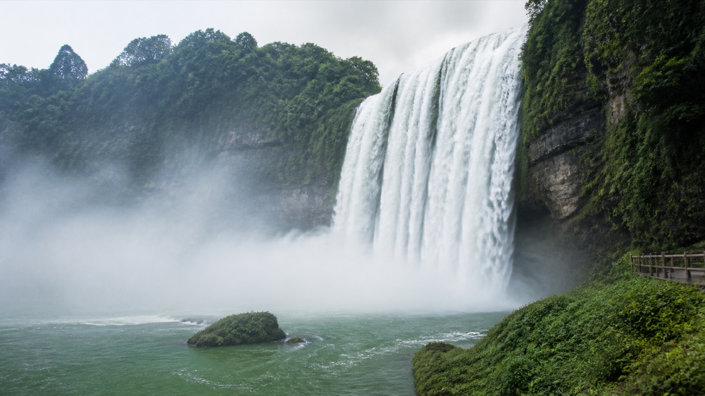

适合第一晚和晚上散步，不需要专门打车。
GUIZHOU GUIDE
GUIZHOU
Summer Guide
Curated for 芋圆 & 妈妈山水很满，行程别太满。五天四晚，慢慢吃，也慢慢看。
TRIP OVERVIEW
这趟不用赶很多地方，只需要每天把一件事玩好。
MAP OVERVIEW
住在喷水池，贵阳这几天其实很好走。
酒店在喷水池附近，第一晚和第二天都以老城为中心；黄果树走大巴，小七孔走高铁，各玩各的，不互相折腾。
HOTEL / HOME
维也纳国际酒店
维也纳国际酒店（贵阳喷水池地铁站太平路网红街店）
不要为了 4.8 分和 4.7 分，多坐 30 分钟车。RESTAURANT GUIDE
不锁死一家店。每顿饭都有 Plan A，也有“不排队就换”的自由。
HOTEL & FOOD MAP
住在太平路，最大的好处可能不是交通，是饿了就能下楼。
Day 2 集中扫街，每样一份两个人分着吃。
顺路再去，不为了评分多坐 30 分钟车。
PACKING LIST
东西少一点，走路轻松一点。
TRAVEL TIPS
贵州 8 月：热、晒、阵雨，防晒和雨衣都要在包里。

ONE SUMMER IN GUIZHOU
5 Days · 3 Landscapes · 1 Old Town · Lots of Food
五天、几场山水、很多顿好吃的，以及妈妈和女儿的一次贵州夏天。